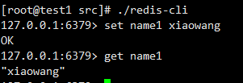

CentOS 7.8 编译安装LNMP
查看CentOS版本信息
1 | [root@test1 ~]# cat /etc/redhat-release |
yum安装必要包
1 | yum -y install gcc gcc-c++ |
Mysql安装
1. 通过yum安装
1 | wget https://repo.mysql.com/mysql-community-release-el7-5.noarch.rpm |
2. 初始化密码
1 | systemctl start mysqld.service |
1 | mysql -u root -p // 输入自己设置的密码 |
mysql安装目录在/var/lib/mysql
3. 忘记密码
1 | vim /etc/my.cnf |
在[mysqld]后添加skip-grant-tables
例如：
1 | [mysqld] |
重启
1 | systemctl restart mysqld.service |
再修改my.cnf文件，去掉skip-grant-tables，重启mysql就好啦！
PHP 7.3安装
1. 下载安装包并解压
创建data目录，并进入data目录下
1 | [root@test1 ~]# mkdir /data |
下载php安装包
1 | [root@test1 ~]# wget https://www.php.net/distributions/php-7.3.23.tar.gz |
解压：
1 | tar zxvf php-7.3.22.tar.gz |
2. 进入安装包编译
1 | cd php-7.3.22 |
configure报错error: Please reinstall the libzip distribution
1 | yum remove libzip |
configure报错error: off_t undefined; check your library configuration
1 | vim /etc/ld.so.conf |
configure报错，致命错误：zipconf.h：没有那个文件或目录
1 | cp /usr/local/lib/libzip/include/zipconf.h /usr/local/include/zipconf.h |
3. php配置
拷贝php.ini配置文件
1 | // 还是在/data/php-7.3.22 目录下 |
编辑php.ini
1 | short_open_tag=On |
4. php环境变量
1 | vim ~/.bash_profile |
再重新加载
1 | [root@test1 ~]# source ~/.bash_profile |
配置成功
5. php-fpm配置
1 | cp /usr/local/php/etc/php-fpm.conf.default /usr/local/php/etc/php-fpm.conf |
进入到cd /usr/local/php/etc/ 目录下
编辑 php-fpm.conf
1 | error_log = log/php-fpm.log |
打开记录日志
进入到cd php-fpm.d
1 | cp www.conf.default www.conf |
编辑www.conf
1 | user = nobody |
设置开机启动
1 | cp sapi/fpm/init.d.php-fpm /etc/init.d/php-fpm #因为php5.3开始自带fpm，使用自带的管理脚本 |
6. 安装redis服务
首先安装redis
1 | yum -y install tcl |
修改redis.conf配置
1 | vim /data/redis-4.0.9/redis.conf |
配置redis服务管理脚本
1 | cp /usr/local/redis/utils/redis_init_script /etc/init.d/redis |
路径配置一下，注意：是6379.conf
1 | /etc/init.d/redis start |
测试是否开启成功
1 | // 进入到src目录下 |

7. 安装redis扩展
1 | yum -y install autoconf |
提示这个，安装成功
编辑php.ini文件
1 | extension=redis.so |
重启php-fpm
1 | [root@test1 ~]# /etc/init.d/php-fpm restart |
测试
1 | // 连接本地的 Redis 服务 |
1 | [root@test1 data]# php redistest.php |
8. 安装swoole扩展
1 | wget https://pecl.php.net/get/swoole-4.5.4.tgz |

编辑php.ini文件
1 | extension=swoole.so |
重启php-fpm
1 | [root@test1 ~]# /etc/init.d/php-fpm restart |
Nginx安装
1. openresty安装
1 | wget https://openresty.org/download/openresty-1.17.8.2.tar.gz |
openresty默认安装/usr/local
2. nginx配置
进入/usr/local/openresty/nginx/conf
编辑nginx.conf
1 | // 在http里添加 |
创建vhosts目录
编辑vhosts/test.conf
1 | server { |
3. 启动nginx
1 | /usr/local/openresty/nginx/sbin/nginx |
4. 测试
进入/usr/local/openresty/nginx/html目录
编辑index.php
1 |
|
在浏览器打开